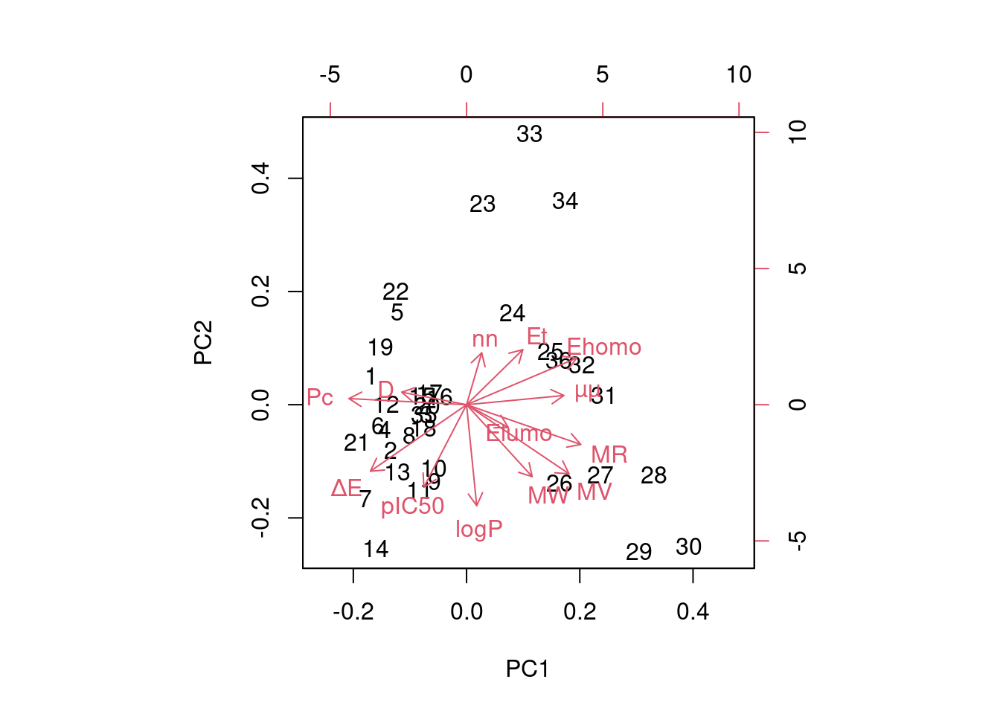
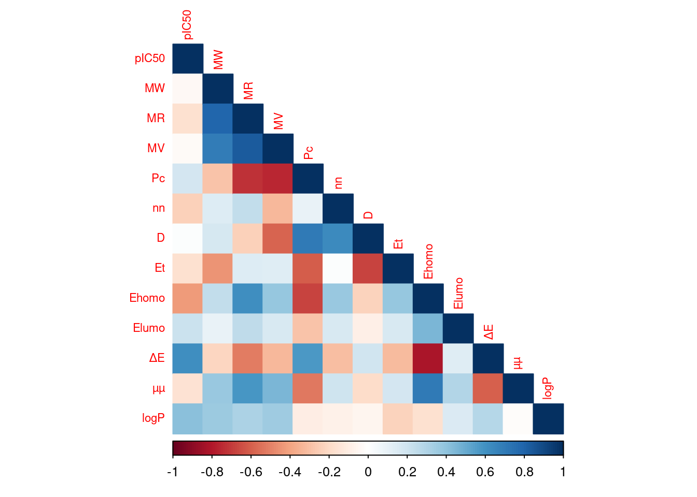

Sección 8 Caso Práctico Modelo QSAR: Regresión Lineal Múltiple
Este caso práctico se enfoca en la construcción de un modelo QSAR (Análisis Cuantitativo de Relación Estructura-Actividad) mediante regresión lineal múltiple (MLR). Los datos de partida se obtuvieron del artículo titulado “QSAR Study of (5-Nitroheteroaryl-1,3,4-Thiadiazole-2-yl) Piperazinyl Derivatives to Predict New Similar Compounds as Antileishmanial Agents” (1). En dicho artículo, se llevaron a cabo estudios QSAR que incluyeron análisis de componentes principales (PCA), regresión lineal múltiple (MLR), regresión no lineal (RNLM) y cálculos de redes neuronales artificiales (ANN) en una serie de 36 compuestos derivados de (5-Nitroheteroaryl-1,3,4-Thiadiazole-2-yl) Piperazinyl (2). El objetivo principal era identificar las características estructurales clave necesarias para diseñar nuevos candidatos potentes de esta clase para la actividad antileishmanial.
En este caso práctico, nos proponemos comparar los resultados obtenidos en nuestro ejercicio con los del mencionado artículo, centrándonos específicamente en el método de regresión lineal múltiple.
La estructura de este caso práctico se dividirá en las siguientes secciones: recopilación de datos, descripción de descriptores moleculares, selección de descriptores, construcción del modelo y validación del modelo.
A diferencia del artículo de referencia, implementaremos el desarrollo del modelo utilizando Rstudio en lugar de XLSTAT versión 2013 que se utilizaron para predecir los efectos sobre la actividad antileishmania.
Datos
- Fuente de datos
La información sobre la actividad antileishmanial experimental (\(pIC_{50}\) en μM) de 36 derivados de tiadiazol se ha recopilado de un estudio previo (2). Cabe destacar que los valores de \(pIC_{50}\) para las 30 moléculas que componen el conjunto de entrenamiento del modelo oscilan en un rango que va desde 3,155 y 5,046. Los detalles sobre las moléculas y sus respectivas actividades biológicas calculadas experimentalmente (\(pIC_{50}\)) se presentan en la siguiente tabla.
library(readxl)
library(knitr)
# Cargar datos
Valores_pIC50_Tiadiazoles <- read_xlsx("Valores_pIC50_Tiadiazoles.xlsx")
# Dividir el conjunto de datos en partes y mostrarlo en una tabla
partes <- split(Valores_pIC50_Tiadiazoles, rep(1:ceiling(nrow(Valores_pIC50_Tiadiazoles) / 9), each = 9, length.out = nrow(Valores_pIC50_Tiadiazoles)))
tabla_datos <- do.call(cbind, partes)
kable(tabla_datos)| 1.N | 1.pIC50 | 2.N | 2.pIC50 | 3.N | 3.pIC50 | 4.N | 4.pIC50 |
|---|---|---|---|---|---|---|---|
| 1 | 4.932 | 10* | 4.222 | 19 | 4.592 | 28 | 4.482 |
| 2 | 4.969 | 11* | 4.618 | 20 | 5.029 | 29 | 5.046 |
| 3* | 4.880 | 12 | 4.549 | 21 | 4.797 | 30 | 4.100 |
| 4* | 4.581 | 13 | 4.624 | 22 | 3.983 | 31 | 4.022 |
| 5 | 4.717 | 14 | 4.608 | 23 | 3.955 | 32 | 4.032 |
| 6 | 4.921 | 15 | 4.983 | 24 | 4.638 | 33 | 3.155 |
| 7 | 4.882 | 16 | 4.693 | 25 | 4.482 | 34 | 3.222 |
| 8 | 4.602 | 17* | 4.748 | 26 | 5.000 | 35 | 4.143 |
| 9 | 4.463 | 18* | 4.367 | 27 | 4.959 | 36 | 4.319 |
Descriptores moleculares
- Generación de descriptores
Para calcular los descriptores electrónicos, los autores emplearon el paquete Gaussian03W (3). Las geometrías de los 36 derivados de tiadiazol se optimizaron mediante el método DFT (Teoría del Funcional de Densidad), una técnica teórica en química computacional utilizada para calcular propiedades electrónicas de las moléculas. Estos cálculos se realizaron utilizando el conjunto funcional B3LYP, que define las interacciones electrónicas en las moléculas, y la base 6-31G (d), un conjunto de funciones de base utilizado para aproximar las funciones de onda electrónica en los cálculos de DFT. Estos cálculos proporcionaron varios descriptores estructurales clave, incluyendo la energía orbital molecular ocupada más alta (HOMO), la energía orbital molecular desocupada más baja (LUMO), el momento dipolar (μ), la brecha de energía (ΔE) y la energía total.
Por otro lado, para calcular una serie de descriptores moleculares adicionales, como el volumen molar MV (cm³), el peso molecular MW (g/mol), la refractividad molar MR (cm³), el parachor Pc (cm³), la densidad D (g/cm³), el índice de refracción n y el coeficiente de partición octanol/agua (logP), se utilizó el programa ChemSketch (4). Los valores de los 12 descriptores químicos calculados se presentan en la siguiente tabla.
library(kableExtra)
# Cargar datos
Valores_Parametros_Tiadiazoles <- read_xlsx("Valores_Parametros_Tiadiazoles.xlsx")
# Mostrar datos
kable(Valores_Parametros_Tiadiazoles, format = "html", table.attr = 'style="font-size: 69%;"')| N | pIC50 | MW | MR | MV | Pc | nn | D | Et | Ehomo | Elumo | ΔE | µµ | logP |
|---|---|---|---|---|---|---|---|---|---|---|---|---|---|
| 1 | 4.932 | 385.40 | 97.67 | 265.6 | 36.597 | 1.66 | 1.45 | -44404.76 | -6.59 | -2.84 | 3.75 | 3.04 | 1.844 |
| 2 | 4.969 | 419.84 | 102.56 | 277.5 | 34.399 | 1.66 | 1.51 | -56919.44 | -6.70 | -2.85 | 3.85 | 3.77 | 2.402 |
| 3* | 4.880 | 419.84 | 102.56 | 277.5 | 34.399 | 1.66 | 1.51 | -56919.28 | -6.41 | -2.92 | 3.49 | 5.40 | 2.402 |
| 4* | 4.581 | 419.84 | 102.56 | 277.5 | 34.399 | 1.66 | 1.51 | -56919.54 | -6.69 | -2.88 | 3.82 | 2.20 | 2.402 |
| 5 | 4.717 | 391.42 | 96.05 | 255.1 | 42.830 | 1.68 | 1.53 | -53138.85 | -6.38 | -3.08 | 3.30 | 7.55 | 1.825 |
| 6 | 4.921 | 425.87 | 100.95 | 267.0 | 40.057 | 1.68 | 1.59 | -65653.52 | -6.70 | -2.88 | 3.82 | 5.74 | 2.199 |
| 7 | 4.882 | 470.32 | 103.74 | 271.2 | 46.026 | 1.69 | 1.73 | -123149.92 | -6.65 | -2.87 | 3.78 | 6.74 | 2.534 |
| 8 | 4.602 | 401.46 | 103.75 | 272.3 | 36.730 | 1.69 | 1.47 | -53199.45 | -6.37 | -2.48 | 3.89 | 3.56 | 3.210 |
| 9 | 4.463 | 435.91 | 108.65 | 284.2 | 34.520 | 1.69 | 1.53 | -65714.15 | -6.69 | -2.93 | 3.76 | 6.05 | 3.768 |
| 10* | 4.222 | 435.91 | 108.65 | 284.2 | 34.520 | 1.69 | 1.53 | -65714.24 | -6.70 | -2.96 | 3.74 | 5.57 | 3.768 |
| 11* | 4.618 | 435.91 | 108.65 | 284.2 | 34.520 | 1.69 | 1.53 | -65714.25 | -6.70 | -2.97 | 3.73 | 4.39 | 3.768 |
| 12 | 4.549 | 407.49 | 102.14 | 261.7 | 42.999 | 1.71 | 1.56 | -61933.62 | -6.61 | -2.93 | 3.69 | 6.03 | 3.191 |
| 13 | 4.624 | 441.94 | 107.03 | 273.7 | 40.210 | 1.71 | 1.61 | -74448.23 | -6.68 | -2.96 | 3.72 | 5.14 | 3.565 |
| 14 | 4.608 | 486.39 | 109.83 | 277.9 | 46.214 | 1.72 | 1.75 | -131944.63 | -6.65 | -2.96 | 3.69 | 5.21 | 3.900 |
| 15 | 4.983 | 399.43 | 105.86 | 254.8 | 37.730 | 1.77 | 1.56 | -45371.46 | -6.25 | -2.81 | 3.44 | 5.62 | 3.856 |
| 16 | 4.693 | 433.87 | 110.46 | 264.1 | 35.430 | 1.78 | 1.64 | -57886.14 | -6.32 | -2.82 | 3.50 | 5.92 | 3.039 |
| 17* | 4.748 | 433.87 | 110.46 | 264.1 | 35.430 | 1.78 | 1.64 | -57886.23 | -6.35 | -2.86 | 3.49 | 4.92 | 2.825 |
| 18* | 4.367 | 433.87 | 110.46 | 264.1 | 35.430 | 1.78 | 1.64 | -57886.24 | -6.40 | -2.72 | 3.68 | 3.96 | 3.956 |
| 19 | 4.592 | 405.45 | 104.45 | 237.2 | 44.267 | 1.83 | 1.70 | -54105.54 | -6.35 | -2.87 | 3.49 | 5.42 | 3.756 |
| 20 | 5.029 | 439.90 | 109.05 | 246.5 | 41.356 | 1.84 | 1.78 | -66620.16 | -5.81 | -1.95 | 3.86 | 6.30 | 2.956 |
| 21 | 4.797 | 484.35 | 112.01 | 249.7 | 47.628 | 1.85 | 1.93 | -124116.56 | -6.42 | -2.90 | 3.52 | 4.48 | 2.984 |
| 22 | 3.983 | 382.40 | 97.23 | 247.9 | 32.430 | 1.71 | 1.54 | -43830.08 | -6.25 | -2.94 | 3.31 | 2.15 | 2.784 |
| 23 | 3.955 | 399.42 | 103.40 | 243.0 | 32.209 | 1.80 | 1.64 | -45370.34 | -5.75 | -2.84 | 2.91 | 8.11 | 1.894 |
| 24 | 4.638 | 413.45 | 108.96 | 266.1 | 27.642 | 1.76 | 1.55 | -46440.57 | -5.75 | -2.82 | 2.94 | 7.46 | 2.414 |
| 25 | 4.482 | 427.48 | 113.57 | 282.1 | 25.050 | 1.74 | 1.51 | -47511.32 | -5.73 | -2.80 | 2.93 | 8.00 | 2.753 |
| 26 | 5.000 | 441.51 | 118.18 | 298.2 | 22.805 | 1.72 | 1.48 | -48581.84 | -5.73 | -2.12 | 3.60 | 7.38 | 3.239 |
| 27 | 4.959 | 455.53 | 122.79 | 314.2 | 20.850 | 1.71 | 1.44 | -49652.19 | -5.71 | -2.82 | 2.89 | 7.61 | 3.656 |
| 28 | 4.482 | 455.53 | 122.95 | 317.9 | 21.003 | 1.70 | 1.43 | -49652.25 | -5.20 | -1.92 | 3.27 | 9.94 | 3.557 |
| 29 | 5.046 | 489.55 | 134.26 | 334.7 | 21.693 | 1.73 | 1.46 | -52732.28 | -5.73 | -2.82 | 2.91 | 7.91 | 4.288 |
| 30 | 4.100 | 519.58 | 140.07 | 356.3 | 19.321 | 1.72 | 1.45 | -55850.74 | -5.72 | -2.82 | 2.90 | 7.84 | 4.162 |
| 31 | 4.022 | 483.54 | 126.43 | 309.1 | 22.355 | 1.75 | 1.56 | -52737.79 | -5.76 | -2.83 | 2.92 | 7.31 | 2.555 |
| 32 | 4.032 | 469.52 | 122.72 | 299.1 | 24.975 | 1.76 | 1.56 | -51666.81 | -5.77 | -2.83 | 2.94 | 7.35 | 2.392 |
| 33 | 3.155 | 425.46 | 112.35 | 262.4 | 34.888 | 1.80 | 1.62 | -47478.41 | -5.42 | -3.00 | 2.42 | 5.80 | 0.821 |
| 34 | 3.222 | 439.49 | 116.96 | 278.5 | 32.136 | 1.78 | 1.57 | -48548.98 | -5.57 | -2.81 | 2.76 | 8.18 | 0.927 |
| 35 | 4.143 | 436.28 | 100.16 | 268.9 | 40.777 | 1.67 | 1.62 | -111329.43 | -5.92 | -2.86 | 3.06 | 5.18 | 3.579 |
| 36 | 4.319 | 428.46 | 111.91 | 283.9 | 24.314 | 1.72 | 1.50 | -48052.33 | -5.73 | -2.82 | 2.91 | 8.65 | 3.130 |
Selección de descriptores
- División set de entrenamiento y set de prueba
Los investigadores dividieron el conjunto de datos aleatoriamente en dos grupos: un conjunto de entrenamiento, que consta de treinta moléculas, se utilizó para construir el modelo cuantitativo. Las moléculas restantes (2, 3, 10, 11, 17 y 18) se reservaron para evaluar el rendimiento del modelo propuesto en un conjunto de prueba.
- Análisis PCA
Se empleó el análisis de componentes principales (PCA) para evaluar la no linealidad y la multicolinealidad entre las variables, y para identificar aquellos descriptores que presentaran correlaciones significativas con la actividad.
##
## Attaching package: 'dplyr'## The following object is masked from 'package:kableExtra':
##
## group_rows## The following objects are masked from 'package:stats':
##
## filter, lag## The following objects are masked from 'package:base':
##
## intersect, setdiff, setequal, union# Seleccionar columnas numéricas
variables_pca <- Valores_Parametros_Tiadiazoles %>%
select_if(is.numeric)
# Excluir pIC50
#variables_pca$pIC50 <- NULL
# Realizar PCA
resultado_pca <- prcomp(variables_pca, scale. = TRUE)
# Resumen PCA
summary(resultado_pca)## Importance of components:
## PC1 PC2 PC3 PC4 PC5 PC6 PC7
## Standard deviation 2.2128 1.5609 1.5204 1.1800 0.83140 0.73144 0.63436
## Proportion of Variance 0.3767 0.1874 0.1778 0.1071 0.05317 0.04115 0.03095
## Cumulative Proportion 0.3767 0.5641 0.7419 0.8490 0.90217 0.94333 0.97428
## PC8 PC9 PC10 PC11 PC12 PC13
## Standard deviation 0.49181 0.27554 0.12256 0.02822 0.02591 0.004796
## Proportion of Variance 0.01861 0.00584 0.00116 0.00006 0.00005 0.000000
## Cumulative Proportion 0.99289 0.99873 0.99989 0.99995 1.00000 1.000000
En base a los resultados del análisis de componentes principales (PCA), podemos concluir que los primeros cinco componentes principales (PC1 a PC5) capturan aproximadamente el 90.22% de la varianza total en los datos. Estos componentes tienen desviaciones estándar significativas y explican una cantidad sustancial de la variabilidad. Por otro lado, los componentes PC6 a PC13, con desviaciones estándar más pequeñas y proporciones de varianza muy bajas, parecen tener una contribución marginal y podrían ser excluidos para simplificar aún más el modelo sin comprometer la representación esencial de los datos.
Es importante destacar que en este análisis se incluyó la actividad biológica, para explorar las relaciones entre la actividad y los descriptores en el mismo espacio de componentes principales, permitiendo comprender las relaciones entre los descriptores y la actividad biológica. Sin embargo, si se busca un enfoque diferente, como la reducción de dimensionalidad y la exploración de patrones en los descriptores moleculares por sí mismos, es posible realizar el PCA sin incluir la actividad biológica. La elección de incluir o excluir esta variable debe basarse en los objetivos específicos de la investigación y las necesidades del análisis.
- Matriz de correlación
## corrplot 0.92 loaded# Seleccionar columnas numéricas
variables_matriz_de_correlacion <- Valores_Parametros_Tiadiazoles %>%
select_if(is.numeric)
# Calcular matriz de correlación
matriz_correlacion <- cor(variables_matriz_de_correlacion)
# Redondear la matriz de correlación a 3 decimales
matriz_correlacion_3d<- round(matriz_correlacion, digits = 3)
# Mostrar datos
kable(matriz_correlacion_3d, format = "html", table.attr = 'style="font-size: 60%;"')| pIC50 | MW | MR | MV | Pc | nn | D | Et | Ehomo | Elumo | ΔE | µµ | logP | |
|---|---|---|---|---|---|---|---|---|---|---|---|---|---|
| pIC50 | 1.000 | -0.033 | -0.167 | -0.022 | 0.184 | -0.231 | 0.011 | -0.167 | -0.423 | 0.219 | 0.614 | -0.159 | 0.416 |
| MW | -0.033 | 1.000 | 0.796 | 0.695 | -0.290 | 0.142 | 0.177 | -0.446 | 0.248 | 0.099 | -0.215 | 0.379 | 0.364 |
| MR | -0.167 | 0.796 | 1.000 | 0.837 | -0.722 | 0.242 | -0.234 | 0.149 | 0.612 | 0.259 | -0.517 | 0.582 | 0.313 |
| MV | -0.022 | 0.695 | 0.837 | 1.000 | -0.756 | -0.328 | -0.583 | 0.135 | 0.382 | 0.168 | -0.320 | 0.455 | 0.354 |
| Pc | 0.184 | -0.290 | -0.722 | -0.756 | 1.000 | 0.097 | 0.702 | -0.608 | -0.677 | -0.285 | 0.572 | -0.523 | -0.098 |
| nn | -0.231 | 0.142 | 0.242 | -0.328 | 0.097 | 1.000 | 0.630 | 0.015 | 0.377 | 0.169 | -0.309 | 0.200 | -0.071 |
| D | 0.011 | 0.177 | -0.234 | -0.583 | 0.702 | 0.630 | 1.000 | -0.677 | -0.225 | -0.085 | 0.197 | -0.189 | -0.057 |
| Et | -0.167 | -0.446 | 0.149 | 0.135 | -0.608 | 0.015 | -0.677 | 1.000 | 0.382 | 0.163 | -0.319 | 0.180 | -0.227 |
| Ehomo | -0.423 | 0.248 | 0.612 | 0.382 | -0.677 | 0.377 | -0.225 | 0.382 | 1.000 | 0.459 | -0.818 | 0.706 | -0.164 |
| Elumo | 0.219 | 0.099 | 0.259 | 0.168 | -0.285 | 0.169 | -0.085 | 0.163 | 0.459 | 1.000 | 0.135 | 0.294 | 0.155 |
| ΔE | 0.614 | -0.215 | -0.517 | -0.320 | 0.572 | -0.309 | 0.197 | -0.319 | -0.818 | 0.135 | 1.000 | -0.598 | 0.283 |
| µµ | -0.159 | 0.379 | 0.582 | 0.455 | -0.523 | 0.200 | -0.189 | 0.180 | 0.706 | 0.294 | -0.598 | 1.000 | -0.011 |
| logP | 0.416 | 0.364 | 0.313 | 0.354 | -0.098 | -0.071 | -0.057 | -0.227 | -0.164 | 0.155 | 0.283 | -0.011 | 1.000 |
# Visualizar matriz de correlación
corrplot(matriz_correlacion, method = "color", type = "lower", tl.cex = 0.7)
La matriz de correlación indica que existen correlaciones moderadas entre algunas variables, pero no hay una correlación extrema que sugiera una multicolinealidad severa. Es decir, las variables están relacionadas de manera moderada, pero no en exceso, lo que permite considerar múltiples variables en un modelo sin preocuparse por una colinealidad extrema.
Construcción del modelo
- Regresión lineal múltiple del artículo
En el artículo, los investigadores utilizaron los descriptores obtenidos para desarrollar un modelo lineal con el propósito de predecir los efectos de los sustituyentes sobre la actividad antileishmania de 30 derivados de tiadiazol (conjunto de entrenamiento) mediante la selección hacia atrás en el MLR. La mejor combinación lineal obtenida incluye tres descriptores seleccionados: la energía Elumo, la energía Ehomo y el coeficiente de partición octanol/agua logP.
Se realizaron múltiples regresiones lineales utilizando el software XLSTAT versión 2013 para predecir los efectos sobre la actividad antileishmania, como se describe en el artículo. Las ecuaciones de los modelos se justifican principalmente por el coeficiente de correlación (R), el error cuadrático medio (MSE), la estadística F de Fisher y el nivel de significancia (valor p). Los resultados por parte de los investigadores en el artículo se muestran a continuación:
Ecuación: \[pIC_{50} = 2.0453-0.6673 E_{homo} + 0.7821 E_{lumo} + 0.1898 logP\]
informacion_modeloMLR_articulo <- data.frame(
Variable = c("N", "R", "MSE", "F", "p-valor"),
Valor = c(30, 0.750, 0.119, 11.43, "<0.0001")
)
# Mostrar información
kable(informacion_modeloMLR_articulo, align = "c")| Variable | Valor |
|---|---|
| N | 30 |
| R | 0.75 |
| MSE | 0.119 |
| F | 11.43 |
| p-valor | <0.0001 |
- Regresión lineal múltiple de nuestro caso práctico
En nuestro caso práctico, optamos por realizar el análisis y desarrollo del modelo directamente en RStudio, una plataforma ampliamente utilizada para estadísticas y análisis de datos. A continuación, presentaremos el procedimiento.
- Conjunto de datos para entrenamiento
# Cargar datos
Set_Entrenamiento <- read_xlsx("Set_Entrenamiento.xlsx")
# Mostrar datos
kable(Set_Entrenamiento)| N | pIC50 | Ehomo | Elumo | logP |
|---|---|---|---|---|
| 1 | 4.932 | -6.59 | -2.84 | 1.844 |
| 2 | 4.969 | -6.70 | -2.85 | 2.402 |
| 3 | 4.717 | -6.38 | -3.08 | 1.825 |
| 4 | 4.921 | -6.70 | -2.88 | 2.199 |
| 5 | 4.882 | -6.65 | -2.87 | 2.534 |
| 6 | 4.602 | -6.37 | -2.48 | 3.210 |
| 7 | 4.463 | -6.69 | -2.93 | 3.768 |
| 8 | 4.549 | -6.61 | -2.93 | 3.191 |
| 9 | 4.624 | -6.68 | -2.96 | 3.565 |
| 10 | 4.608 | -6.65 | -2.96 | 3.900 |
| 11 | 4.983 | -6.25 | -2.81 | 3.856 |
| 12 | 4.693 | -6.32 | -2.82 | 3.039 |
| 13 | 4.592 | -6.35 | -2.87 | 3.756 |
| 14 | 5.029 | -5.81 | -1.95 | 2.956 |
| 15 | 4.797 | -6.42 | -2.90 | 2.984 |
| 16 | 3.983 | -6.25 | -2.94 | 2.784 |
| 17 | 3.955 | -5.75 | -2.84 | 1.894 |
| 18 | 4.638 | -5.75 | -2.82 | 2.414 |
| 19 | 4.482 | -5.73 | -2.80 | 2.753 |
| 20 | 5.000 | -5.73 | -2.12 | 3.239 |
| 21 | 4.959 | -5.71 | -2.82 | 3.656 |
| 22 | 4.482 | -5.20 | -1.92 | 3.557 |
| 23 | 5.046 | -5.73 | -2.82 | 4.288 |
| 24 | 4.100 | -5.72 | -2.82 | 4.162 |
| 25 | 4.022 | -5.76 | -2.83 | 2.555 |
| 26 | 4.032 | -5.77 | -2.83 | 2.392 |
| 27 | 3.155 | -5.42 | -3.00 | 0.821 |
| 28 | 3.222 | -5.57 | -2.81 | 0.927 |
| 29 | 4.143 | -5.92 | -2.86 | 3.579 |
| 30 | 4.319 | -5.73 | -2.82 | 3.130 |
- Generación modelo MLR
# Excluir columna N (columna de identificacón de las moléculas)
Set_Entrenamiento$N <- NULL
# Ajustar el modelo de regresión múltiple
modeloMLR <- lm(pIC50 ~ Ehomo + Elumo + logP, data = Set_Entrenamiento)
# Resumen del modelo
summary(modeloMLR)##
## Call:
## lm(formula = pIC50 ~ Ehomo + Elumo + logP, data = Set_Entrenamiento)
##
## Residuals:
## Min 1Q Median 3Q Max
## -0.51750 -0.28208 -0.00307 0.23097 0.61467
##
## Coefficients:
## Estimate Std. Error t value Pr(>|t|)
## (Intercept) 2.03235 0.93236 2.180 0.038519 *
## Ehomo -0.66714 0.16179 -4.123 0.000339 ***
## Elumo 0.77764 0.26150 2.974 0.006271 **
## logP 0.19026 0.07651 2.487 0.019636 *
## ---
## Signif. codes: 0 '***' 0.001 '**' 0.01 '*' 0.05 '.' 0.1 ' ' 1
##
## Residual standard error: 0.3449 on 26 degrees of freedom
## Multiple R-squared: 0.5592, Adjusted R-squared: 0.5083
## F-statistic: 10.99 on 3 and 26 DF, p-value: 7.63e-05La ecuación resultante del modelo es:
\[pIC_{50} = 2.0323-0.6671 E_{homo} + 0.7776 E_{lumo} + 0.1903 logP\]
Para una comparación directa de resultados, generamos la misma información que los investigadores en el estudio, como se muestra a continuación:
# Número de compuestos (N)
N <- length(modeloMLR$fitted.values)
# Coeficiente de correlación (R)
R <- sqrt(summary(modeloMLR)$r.squared)
# Error cuadrático medio (MSE)
MSE <- summary(modeloMLR)$sigma^2
# Criterio de Fisher (F)
Fisher <- summary(modeloMLR)$fstatistic[1]
# Nivel de significancia (p-valor)
p.valor <- pf(Fisher, summary(modeloMLR)$fstatistic[2], summary(modeloMLR)$fstatistic[3], lower.tail = FALSE)
# Dataframe con la información
informacion_modeloMLR <- data.frame(
Variable = c("N", "R", "MSE", "F", "p-valor"),
Valor = c(N, R, MSE, Fisher, p.valor)
)
# Mostrar información
kable(informacion_modeloMLR, align = "c")| Variable | Valor |
|---|---|
| N | 30.0000000 |
| R | 0.7477869 |
| MSE | 0.1189792 |
| F | 10.9938985 |
| p-valor | 0.0000763 |
- Comparación de resultados
Ecuación generada con XLSTAT: \[pIC_{50} = 2.0453-0.6673 E_{homo} + 0.7821 E_{lumo} + 0.1898 logP\]
Ecuación generada con Rstudio: \[pIC_{50} = 2.0323-0.6671 E_{homo} + 0.7776 E_{lumo} + 0.1903 logP\]
# Combinar tablas por la columna 'Variable'
tabla_comparativa <- merge(informacion_modeloMLR_articulo, informacion_modeloMLR, by = "Variable", all = TRUE)
# Renombra las columnas para mayor claridad
colnames(tabla_comparativa) <- c("Variable", "Valor XLSTAT", "Valor Rstudio")
# Muestra la tabla comparativa
kable(tabla_comparativa, align = "c")| Variable | Valor XLSTAT | Valor Rstudio |
|---|---|---|
| F | 11.43 | 10.9938985 |
| MSE | 0.119 | 0.1189792 |
| N | 30 | 30.0000000 |
| p-valor | <0.0001 | 0.0000763 |
| R | 0.75 | 0.7477869 |
Validación del modelo
- Validación Interna de nuestro caso práctico
Se llevó a cabo la validación cruzada interna dejando uno fuera (también conocida como “leave-one-out cross-validation” o LOOCV). LOOCV es un caso especial de validación cruzada en el que se entrena el modelo con todos los datos excepto uno y se evalúa en ese único punto excluido. Este proceso se repite para cada punto de datos, lo que garantiza que cada punto se excluya una vez.
##
## Attaching package: 'data.table'## The following objects are masked from 'package:dplyr':
##
## between, first, last## Loading required package: ggplot2## Loading required package: lattice# Excluir columna N (columna de identificación de las moléculas)
Set_Entrenamiento$N <- NULL
# Crear un controlador para la validación cruzada dejando uno fuera
control <- trainControl(method = "LOOCV")
# Ajustar el modelo de regresión múltiple con LOOCV
modeloMLR_cv <- train(pIC50 ~ Ehomo + Elumo + logP, data = Set_Entrenamiento, method = "lm", trControl = control)
# Ver los resultados
print(modeloMLR_cv)## Linear Regression
##
## 30 samples
## 3 predictor
##
## No pre-processing
## Resampling: Leave-One-Out Cross-Validation
## Summary of sample sizes: 29, 29, 29, 29, 29, 29, ...
## Resampling results:
##
## RMSE Rsquared MAE
## 0.3766402 0.4015121 0.3276817
##
## Tuning parameter 'intercept' was held constant at a value of TRUE##
## Call:
## lm(formula = .outcome ~ ., data = dat)
##
## Residuals:
## Min 1Q Median 3Q Max
## -0.51750 -0.28208 -0.00307 0.23097 0.61467
##
## Coefficients:
## Estimate Std. Error t value Pr(>|t|)
## (Intercept) 2.03235 0.93236 2.180 0.038519 *
## Ehomo -0.66714 0.16179 -4.123 0.000339 ***
## Elumo 0.77764 0.26150 2.974 0.006271 **
## logP 0.19026 0.07651 2.487 0.019636 *
## ---
## Signif. codes: 0 '***' 0.001 '**' 0.01 '*' 0.05 '.' 0.1 ' ' 1
##
## Residual standard error: 0.3449 on 26 degrees of freedom
## Multiple R-squared: 0.5592, Adjusted R-squared: 0.5083
## F-statistic: 10.99 on 3 and 26 DF, p-value: 7.63e-05Un buen valor de Rcv (Coeficiente de correlación en la validacion cruzada interna) de diez indica que el modelo tiene robustez y alto poder predictivo interno en el conjunto de datos utilizado.
Sin embargo, es importante tener en cuenta que el valor de Rcv no siempre está correlacionado con el poder predictivo real de un modelo QSAR en sustancias químicas nuevas. Esto significa que Rcv podría no ser una estimación confiable del poder predictivo del modelo para todas las sustancias químicas. Para una evaluación más confiable del poder predictivo, se requiere un conjunto de validación externa que no se haya utilizado en el desarrollo del modelo.
Para mejorar la capacidad predictiva de los modelos QSAR, se calculan un conjunto de métricas llamadas “métricas \(r²_{m}\)”. Estas métricas evalúan qué tan cerca están las predicciones del modelo de los valores reales observados en los datos. En la actualidad, se calculan dos versiones de estas métricas: una que llamamos “\(r²_{m}\)” y otra llamada “\(\Delta r²_{m}\)”. Ambas se utilizan tanto en la validación interna (conjunto de entrenamiento) como en la validación externa (conjunto de prueba) de los modelos QSAR.
Para considerar que un modelo QSAR es aceptable, el valor de “\(\bar{r²_{m}}\)” debe ser mayor que 0.5, lo que indica una buena concordancia entre las predicciones y los valores reales. Además, el valor de “\(\Delta r²_{m}\)” debe ser menor que 0.2, lo que sugiere una pequeña diferencia entre las dos versiones de métricas. Estos criterios son importantes para evaluar la calidad de un modelo QSAR y su capacidad para predecir de manera precisa.
A continuación se muestran los cálculos de Rvc, y las métricas \(r²_{m}\):
# Obtener las predicciones del modelo para el conjunto de entrenamiento
predicciones <- predict(modeloMLR_cv, Set_Entrenamiento)
# Obtener el Rcv (Coeficiente de correlación)
Rcv <- cor(predicciones, Set_Entrenamiento$pIC50)
# Calcular r²m (R cuadrado subíndice m)
r2_m <- 1 - sum((Set_Entrenamiento$pIC50 - predicciones)^2) / sum((Set_Entrenamiento$pIC50 - mean(Set_Entrenamiento$pIC50))^2)
# Definir el valor de r'²m (valor de referencia o alternativo)
r2_m_ref <- 0.75
# Calcular la diferencia absoluta entre r²m y r'²m
Delta_r2_m <- abs(r2_m - r2_m_ref)
# Calcular el promedio de r²m y r'²m
Promedio_r2_m <- (r2_m + r2_m_ref) / 2
# Tabla con resultados
tabla_resultados <- data.frame(
"Medida" = c("Rcv (Coeficiente de correlación) ", "r²m (R cuadrado subíndice m)",
"r'²m (valor de referencia o alternativo)", "Δr²m (Diferencia absoluta entre r²m y r'²m)",
"Promedio de r²m y r'²m"),
"Valor" = c(Rcv, r2_m, r2_m_ref, Delta_r2_m, Promedio_r2_m)
)
# Mostrar tabla
knitr::kable(tabla_resultados)| Medida | Valor |
|---|---|
| Rcv (Coeficiente de correlación) | 0.7477869 |
| r²m (R cuadrado subíndice m) | 0.5591853 |
| r’²m (valor de referencia o alternativo) | 0.7500000 |
| Δr²m (Diferencia absoluta entre r²m y r’²m) | 0.1908147 |
| Promedio de r²m y r’²m | 0.6545926 |
- Validación Externa
| N | pIC50 | Ehomo | Elumo | logP |
|---|---|---|---|---|
| 2 | 4.880 | -6.41 | -2.92 | 2.402 |
| 3 | 4.581 | -6.69 | -2.88 | 2.402 |
| 10 | 4.222 | -6.70 | -2.96 | 3.768 |
| 11 | 4.618 | -6.70 | -2.97 | 3.768 |
| 17 | 4.748 | -6.35 | -2.86 | 2.825 |
| 18 | 4.367 | -6.40 | -2.72 | 3.956 |
Referencias
- Ousaa A, Elidrissi B, Ghamali M, Chtita S, Aouidate A, Bouachrine M, et al. QSAR Study of (5-Nitroheteroaryl-1,3,4-Thiadiazole-2-yl) Piperazinyl Derivatives to Predict New Similar Compounds as Antileishmanial Agents. Adv Phys Chem. 10 de septiembre de 2018;2018:1-10.
- Tahghighi A, Hamzeh-Mivehroud M, Asadpour Zeynali K, Foroumadi A, Dastmalchi S. QSAR and docking studies on the (5-nitroheteroaryl-1,3,4-thiadiazole-2-yl) piperazinyl analogs with antileishmanial activity: QSAR and docking study on thiadiazole series as antileishmanial agents. J Chemom. mayo de 2016;30(5):284-93.
- Frich M. Gaussian 03 Revisión B.01. Pitts-burgh, California, EE. UU.: Gaussian, Inc.; 2003.
- ACDLABS 10. Toronto, Canadá: Advanced Chemistry Development, Inc.; 2015.